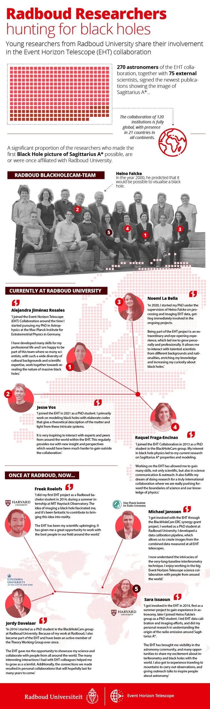
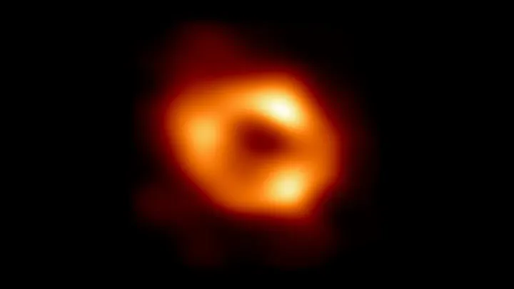

Nieuws ·
Astronomen onthullen eerste beeld van het zwarte gat in het hart van onze Melkweg

Dit bericht uit ons archief verscheen op 12 mei 2022 op NieuwsNijmegen.nl. Data, tijden en prijzen kunnen inmiddels anders zijn.
Astronomen hebben het eerste beeld onthuld van het superzware zwarte gat in het centrum van ons eigen sterrenstelsel, de Melkweg. Dit resultaat vormt het overtuigende bewijs dat Sagittarius A*, zoals het wordt genoemd, inderdaad een zwart gat is. Ook levert het waardevolle aanwijzingen op over de werking van dergelijke extreme objecten, waarvan wordt aangenomen dat ze zich in het centrum van de meeste sterrenstelsels bevinden.

Credit: EHT CollaborationDe afbeelding is gemaakt door de wereldwijde samenwerking binnen de Event Horizon Telescope (EHT) en is vandaag gepresenteerd door EHT-directeur Huib Jan van Langevelde (JIVE/Universiteit Leiden) op een persconferentie in het hoofdkwartier van de Europese Zuidelijke Sterrewacht (ESO) in Duitsland.
Het team heeft gebruikgemaakt van waarnemingen van een mondiaal netwerk van radiotelescopen. Nederlandse astronomen en technici van onder andere de Universiteit van Amsterdam, de Radboud Universiteit, de Universiteit Leiden, Rijksuniversiteit Groningen, JIVE en ASTRON maken deel uit van de EHT-samenwerking. Het resultaat is in zes artikelen beschreven en wordt vandaag gepubliceerd in een speciale uitgave van The Astrophysical Journal Letters.
Eerste bewijs van Sagittarius A*
Wetenschappers hadden al eerder sterren gezien die rond een onzichtbaar, compact en superzwaar object in het centrum van de Melkweg draaiden. Ze gingen er al lange tijd van uit dat dit object – Sagittarius A* (afgekort tot Sgr A*) – een zwart gat is, maar dit is het eerste directe visuele bewijs ervan. Hoewel het zwarte gat zelf niet te zien is, omdat het volledig donker is en niets – zelfs geen licht – eruit kan ontsnappen, laat gloeiend gas eromheen een duidelijk kenmerk zien: een donker centraal gebied (de ‘schaduw’), omgeven door een heldere ringvormige structuur.
Het nieuwe beeld toont het licht dat wordt afgebogen door de sterke zwaartekracht van het zwarte gat, dat vier miljoen keer zo zwaar is als onze zon. “We waren stomverbaasd over hoe goed de grootte van de ring overeenkwam met de voorspellingen van Einsteins algemene relativiteitstheorie”, zegt EHT-projectwetenschapper Geoffrey Bower van het Institute of Astronomy and Astrophysics, Academia Sinica (Taipei). “Deze waarnemingen hebben ons begrip van wat er zich afspeelt in het centrum van ons melkwegstelsel enorm verbeterd en bieden nieuwe inzichten in hoe deze reusachtige zwarte gaten met hun omgeving wisselwerken.”
Donut op de maan
Het zwarte gat is ongeveer 27.000 lichtjaar van de aarde verwijderd. De grootte van Sgr A* aan de hemel is vergelijkbaar met de omvang van een donut op de maan. Om dit in beeld te kunnen brengen, is een telescoop ter grootte van de aarde nodig, de Event Horizon Telescope (EHT). De EHT combineert acht bestaande radio-observatoria over de hele planeet. Met deze radiotelescopen werd Sgr A* gedurende meerdere nachten vele urenlang waargenomen. Dat leverde een schat aan data op.
Lijken veel op elkaar
Het nieuwe EHT-resultaat volgt op de publicatie in 2019 van de eerste afbeelding van het zwart gat in het centrum van het verder weg gelegen sterrenstelsel Messier 87 (M87*). De twee zwarte gaten lijken opmerkelijk veel op elkaar, ook al is het zwarte gat van ons sterrenstelsel meer dan duizend keer kleiner en minder zwaar dan M87*. “We hebben twee heel verschillende sterrenstelsels en twee verschillende zwarte gaten, maar als je dichtbij genoeg komt om naar de rand van deze zwarte gaten te kijken, zien ze er hetzelfde uit”, zegt Sera Markoff, medevoorzitter van de EHT Wetenschapsraad en hoogleraar theoretische astrofysica aan de Universiteit van Amsterdam. “Dit vertelt ons dat deze objecten van dichtbij door de algemene relativiteitstheorie worden geregeerd, en dat alle verschillen die we verder ervandaan zien te wijten moeten zijn aan verschillen in het materiaal dat de zwarte gaten omringt.”
De waarneemcampagne voor Sgr A* was aanzienlijk moeilijker dan voor M87*, ook al staat Sgr A* veel dichterbij. EHT-wetenschapper Chi-kwan (‘CK’) Chan van de Steward-sterrenwacht de Vakgroep Astronomie en het Data Science Institute van de Universiteit van Arizona (VS) legt uit: “Het gas in de buurt van de zwarte gaten beweegt met dezelfde snelheid – bijna net zo snel als het licht – rond zowel Sgr A* als M87*. Maar waar gas er dagen over doet om rond M87* te draaien, voltooit het rond het veel kleinere zwarte gat Sgr A* een baan in slechts een fractie van een uur. Dit betekent dat de helderheid en het patroon van het gas rond Sgr A* snel veranderen tijdens de waarnemingen. Het is een beetje zoals wanneer je een duidelijke foto probeert te maken van een puppy die achter zijn eigen staart aanzit.”
De onderzoekers hebben geavanceerde nieuwe instrumenten ontwikkeld om de gasbeweging rond Sgr A* te verklaren. Terwijl M87* een gemakkelijker, stabieler doelwit was, waarbij bijna alle beelden er hetzelfde uitzagen, was dat niet het geval voor Sgr A*. Het beeld van het zwarte gat van Sgr A* is een gemiddelde van de verschillende beelden die het team heeft waargenomen.
Al 20 jaar geleden voorspeld
Binnen de EHT werken meer dan 300 onderzoekers van 80 instituten over de hele wereld samen. Met behulp van supercomputers hebben ze de afgelopen vijf jaar gegevens gecombineerd en geanalyseerd met als resultaat een omvangrijk archief van gesimuleerde zwarte gaten. Deze simulaties hebben ze vergeleken met de waarnemingen.
In 2000 bedacht Heino Falcke, lid van het EHT-bestuur en hoogleraar astrodeeltjesfysica en astronomie aan de Radboud Universiteit, de term ‘schaduw van het zwarte gat’ voor het effect van lichtvervorming rond een zwart gat, en voorspelde dat het mogelijk moest zijn een zwart gat met radiotelescopen in beeld te brengen. Samen met Sera Markoff maakte hij toen ook de eerste berekeningen van de straling van dit zwarte gat. “Het lijkt erop dat onze voorspellingen van 20 jaar geleden nu worden bevestigd”, aldus Markoff.
Lees verder onder de infographic
Twee zwarte gaten in beeld
De wetenschappers zijn bijzonder verheugd dat ze eindelijk beelden hebben van twee zwarte gaten van zeer verschillende grootte. Het biedt de mogelijkheid om te begrijpen hoe ze zich tot elkaar verhouden en waarin ze verschillen. De nieuwe gegevens worden nu gebruikt om theorieën en modellen te testen over hoe gas zich gedraagt rond superzware zwarte gaten. Dat is een proces dat nog niet volledig wordt begrepen, maar waarvan wordt aangenomen dat het een belangrijke rol speelt bij de vorming en evolutie van sterrenstelsels.
“Nu kunnen we de verschillen tussen de twee superzware zwarte gaten bestuderen, om waardevolle nieuwe aanwijzingen te krijgen over hoe dit proces werkt”, zegt EHT-wetenschapper Keiichi Asada van het Instituut voor Astronomie en Astrofysica, Academia Sinica, Taipei.“We hebben nu beelden van twee superzware zwarte gaten – één aan de grote kant en één aan de kleine kant – dus kunnen we beter dan ooit tevoren testen hoe de zwaartekracht zich in deze extreme omgevingen gedraagt.”
Africa Millimetre Telescope
De ontwikkeling van de EHT gaat door: een grote waarneemcampagne in maart 2022 telde meer telescopen dan ooit tevoren. De voortdurende uitbreiding van het EHT-netwerk en significante technologische upgrades zorgen ervoor dat wetenschappers in de nabije toekomst meer, nog indrukwekkendere beelden en zelfs filmpjes van zwarte gaten kunnen presenteren. De Radboud Universiteit ontwikkelt, samen met de University of Namibia de Africa Millimetre Telescope (AMT) op de Gamsberg in Namibië. De AMT-telescoop, verwacht in 2026, is een cruciale toevoeging aan het netwerk voor het maken van dynamische opnamen van zwarte gaten.
Publicaties:
https://iopscience.iop.org/journal/2041-8205/page/Focus_on_First_Sgr_A_Results
Meer informatie:
Contactinformatie:
- Geoffrey Bower, EHT-projectwetenschapper, Institute of Astronomy and Astrophysics, Academic Sinica, Taipei, +1-808-961-2945, gbower@asiaa.sinica.edu.tw
- Huib Jan van Langevelde, EHT-projectdirecteur, JIVE en Universiteit Leiden, 06 21201419, langevelde@jive.eu
- Sera Markoff, Vice-voorzitter EHT Wetenschapsraad, Universiteit van Amsterdam, 06-28547250, B.Markoff@uva.nl
- Heino Falcke, EHT-bestuur, Radboud Universiteit, +49 1512 3040365, h.falcke@astro.ru.nl
- Communicatie NOVA/Marieke Baan, m.baan@uva.nl, 0614322627
- Persvoorlichting & Wetenschapscommunicatie Radboud Universiteit, 024 361 6000, media@ru.nl